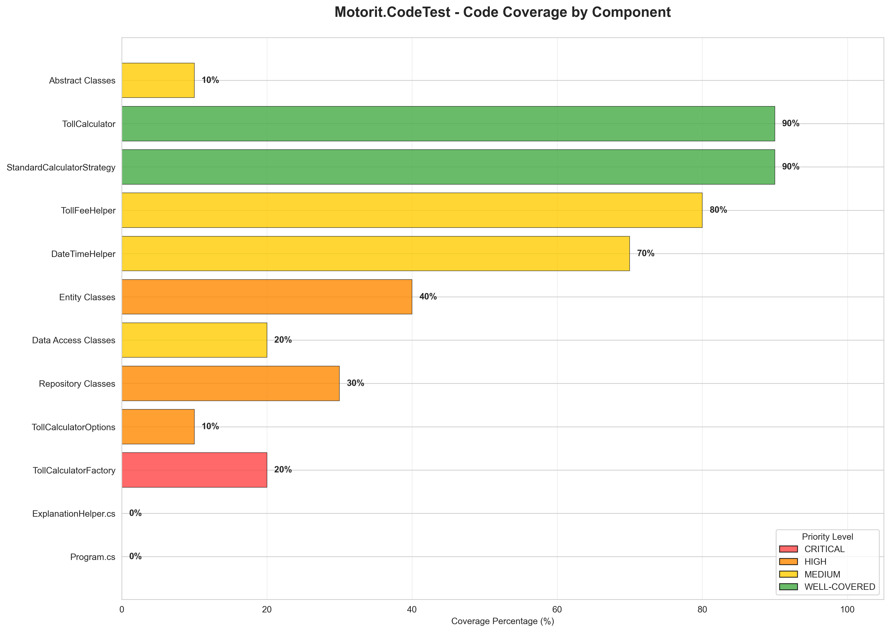
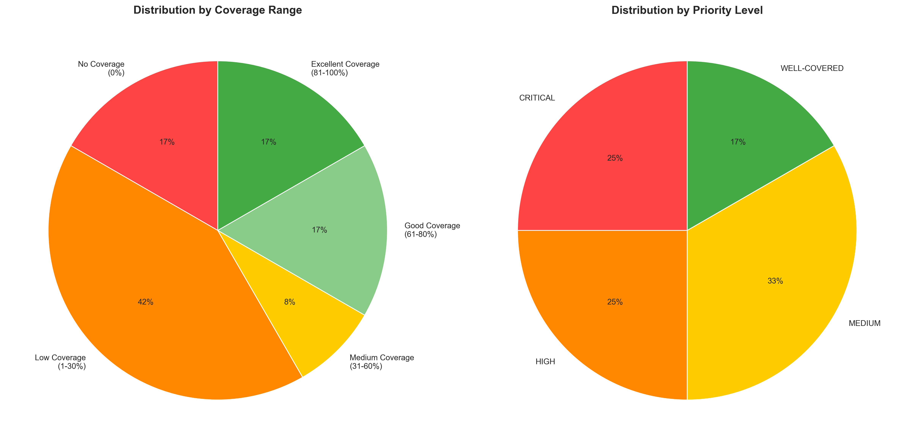
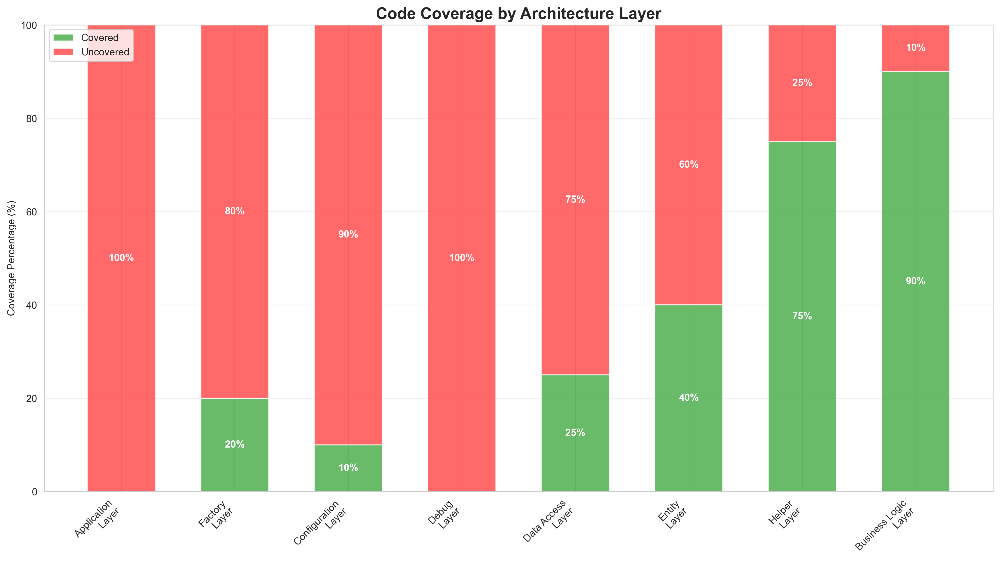
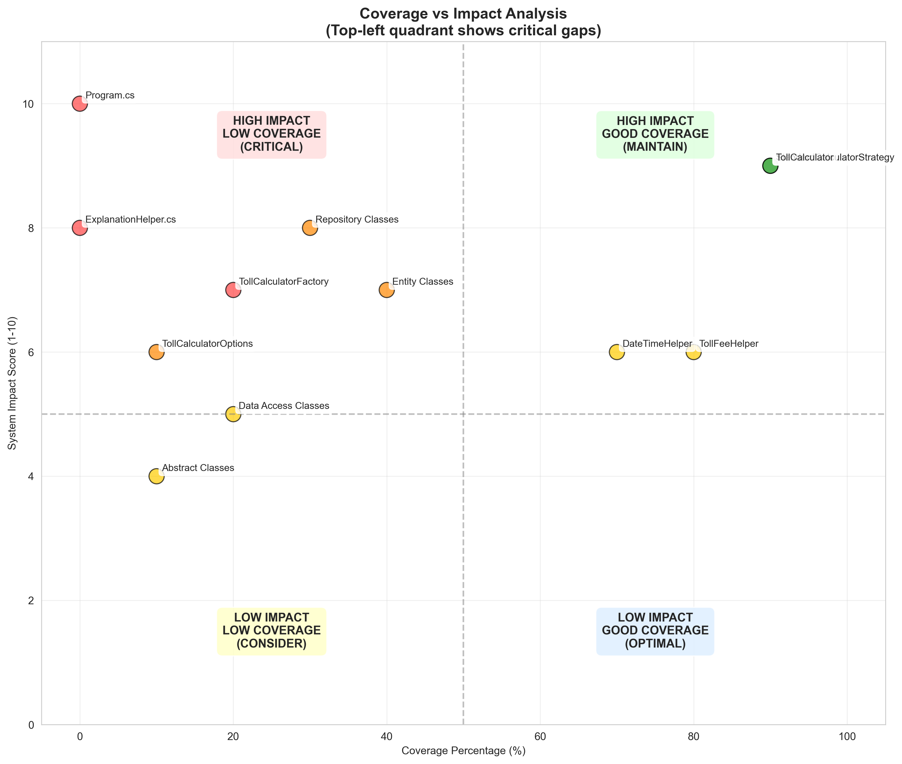
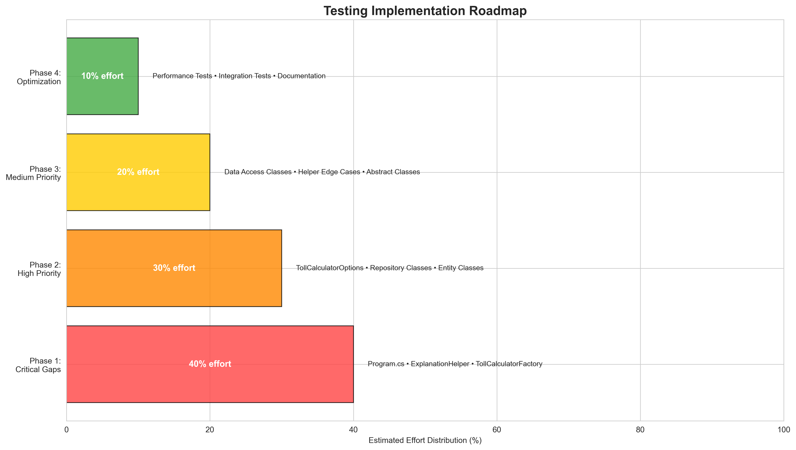

Key Insights:
- Program.cs and ExplanationHelper.cs have 0% coverage (Critical)
- Business logic components (Strategy, Calculator) are well-covered (90%)
- Infrastructure components need significant attention
- 7 out of 12 components have less than 50% coverage

Distribution Highlights:
- 42% of components have low or no coverage
- 25% are classified as critical priority
- Only 17% of components have excellent coverage (80%+)
- 33% of components fall into medium priority category

Layer Analysis:
- Application and Debug layers completely uncovered (0%)
- Business Logic layer excellently covered (90%)
- Helper layer has good coverage (75%)
- Infrastructure layers need significant improvement

Strategic Priorities:
- Program.cs: High impact, zero coverage - IMMEDIATE ACTION REQUIRED
- TollCalculatorFactory: High impact, low coverage - Priority fix
- Core business logic properly covered and maintained
- Focus efforts on top-left quadrant components

Implementation Strategy:
- Phase 1 (40% effort): Address critical gaps first
- Phase 2 (30% effort): Cover high-priority components
- Phase 3 (20% effort): Complete medium-priority items
- Phase 4 (10% effort): Optimization and documentation